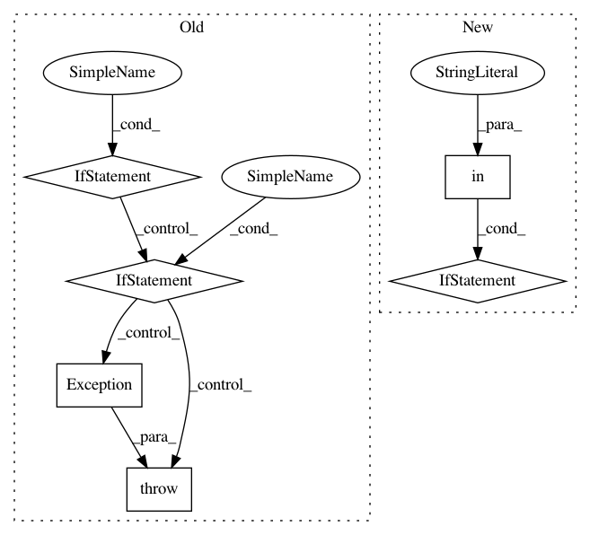

6d8b17c9bc792474a2b69d97407163508039ad1d,email-tester-suite/custom-recipes/email-tester-locally/recipe.py,,,#,13
Before Change
logging.info("cache: %s" % str(cache))
// Getting disposable email domains from https://github.com/ivolo/disposable-email-domains
if verification_level > 1:
r = requests.get("https://rawgit.com/ivolo/disposable-email-domains/master/index.json")
disposable_domains = r.json()
if r.status_code >= 300 or not isinstance(disposable_domains, list) or len(disposable_domains) < 50:
raise Exception("Error when getting disposable emails domains")
else:
disposable_domains = None
// Email format validation
EMAIL_REGEX = re.compile(r"^[A-Za-z0-9\.\+_-]+@[A-Za-z0-9\._-]+\.[a-zA-Z]{2,10}$")
def email_test_regex(email):
if not email or len(email) == 0:
return False
After Change
filename = "email-tester-locally-cache"
cache_file = os.path.join(cache_folder, filename)
cache = shelve.open(cache_file, writeback = True)
cache_plugin_version = cache["plugin_version"] if "plugin_version" in cache else None
logging.info("cache file: %s" % cache_file)
logging.debug("cache: %s" % str(cache))
// Function to compare version numbers
In pattern: SUPERPATTERN
Frequency: 3
Non-data size: 6
Instances
Project Name: dataiku/dataiku-contrib
Commit Name: 6d8b17c9bc792474a2b69d97407163508039ad1d
Time: 2016-01-17
Author: jeremy.greze@dataiku.com
File Name: email-tester-suite/custom-recipes/email-tester-locally/recipe.py
Class Name:
Method Name:
Project Name: apple/coremltools
Commit Name: d1e6e624ef891543c5bba32bb0a696d350714693
Time: 2019-08-20
Author: smq@apple.com
File Name: coremltools/models/utils.py
Class Name:
Method Name: _convert_nn_spec_to_half_precision
Project Name: googledatalab/pydatalab
Commit Name: 0ac8733a4aa7f6fd9845c2746d9c8346ab794510
Time: 2017-10-27
Author: 4618540+rajivpb@users.noreply.github.com
File Name: google/datalab/contrib/bigquery/operators/_bq_load_operator.py
Class Name: LoadOperator
Method Name: execute